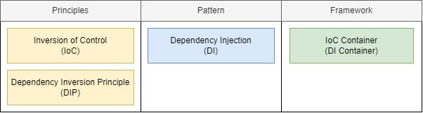

IoC Container или DI Container?

Когда вы начинаете изучать Spring, то неизбежно сталкиваетесь с понятиями IoC (Inversion of Control) и DI (Dependency Injection). Часто их используют в сочетаниях IoC Container и DI Container. Масла в огонь подливает созвучный принцип, который скрывается за буквой D в SOLID, DIP (Dependency Inversion Principle).
Исходя из своего опыта проведения собеседований могу сказать, что пониманием разницы обладают единицы. А может оно и не надо? Что скрывается за этими понятиями и что отвечать на собеседованиях?
В статье и её развитии дано разграничение понятий IoC, DI и DIP. Я с удовольствием почитал комментарии и статьи Фаулера 1 и 2 , которые были взяты за основу.
Осталось разобраться, есть ли разница между понятиями IoC Container и DI Container. И если есть, то какое из них следует использовать?
Однозначного ответа на эти вопросы мне найти не удалось, однако в результате анализа я выделил три позиции:
- IoC Container — слишком широкое понятие, которое ничего не говорит о том, что он на самом деле делает. Абсолютно любой фреймворк можно назвать IoC-контейнером, потому что он по определению реализует инверсию управления и является контейнером для кода общего назначения.
- IoC Container == DI Container. Оба понятия обозначают одно и то же: фреймворки для эффективной реализации автоматической регистрации, внедрения и управления жизненным циклом зависимостей.
- IoC Container — механизм, который реализует принцип инверсии управления и позволяет в том числе управлять жизненным циклом объектов и их зависимостями. DI Container — частный вариант IoC Container, который специализируется на внедрении зависимостей в объекты.
Первая позиция выглядит разумно, но понятие IoC Container всё же более узкое по отношению к фреймворку: это набор механизмов, который предоставляет фреймворк для реализации инверсии управления.
Вторую позицию я видел чаще всего. Если сократить «инверсию управления» до «внедрения зависимостей» и одновременно обогатить «внедрение зависимостей» управлением жизненным циклом, то с равенством IoC Container == DI Container можно согласиться.
Третья позиция, наоборот, самая непопулярная, но выглядит наиболее сбалансированной и наиболее точно отражает суть понятий IoC и DI.
Что отвечать на собеседованиях?
Если говорить о Spring, то стоит обратиться к разделу документации Introduction to the Spring IoC Container and Beans . На что стоит обратить внимание?
- Исходя из названия раздела, контейнер в Spring всё же IoC.
-
Авторы пишут, что
IoC is also known as dependency injection (DI). Как видим, составители документации достаточно небрежно относятся к терминологии или просто потакают мнению не разобравшихся в вопросе. Авторы отождествляют понятия IoC и DI, а значит IoC Container и DI Container можно считать равнозначными. Так же, по моим наблюдениям, считает и большинство разработчиков. - Авторы документации вкладывают в понятие IoC Container всё же больше, чем просто внедрение зависимостей: BeanFactory даёт механизм конфигурирования для объектов любого типа, а ApplicationContext добавляет интеграцию с AOP, работу с сообщениями, публикацию событий и прикладные контексты вроде WebApplicationContext.
Подведём итог. Когда говорят об IoC/DI Container в контексте Spring, то в подавляющем большинстве случаев говорят о внедрении зависимостей, так что можно считать понятия равнозначными. Однако сам контейнер даёт больше возможностей, чем просто внедрение зависимостей, о чём следует помнить.
← Назад к списку статей